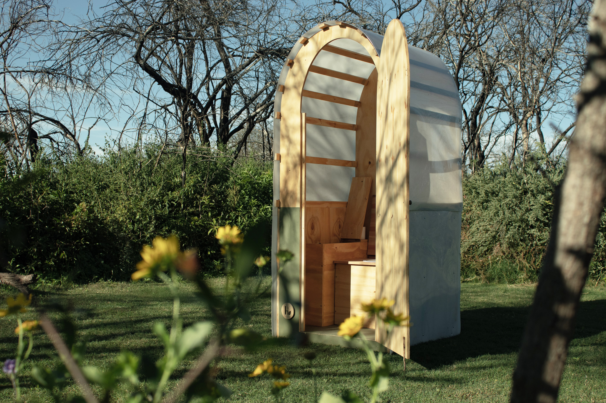
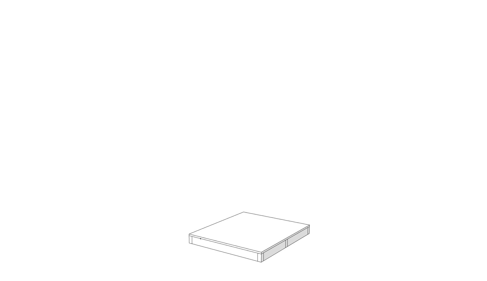
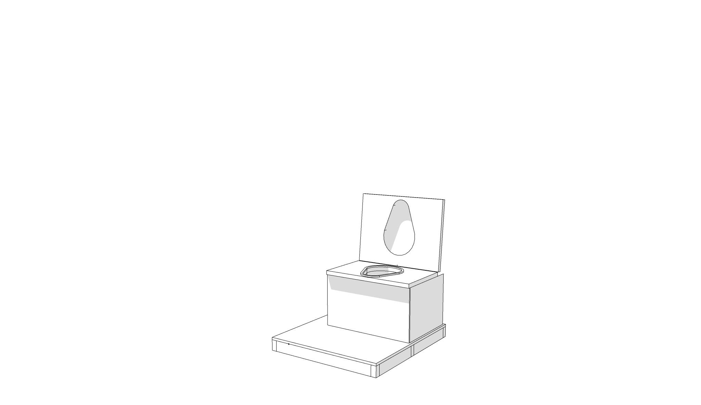
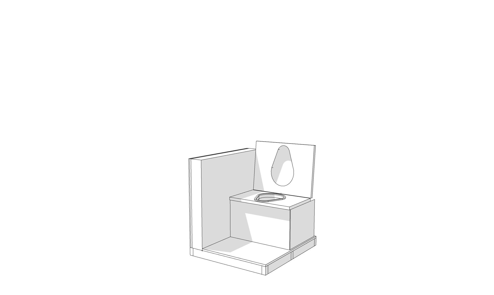
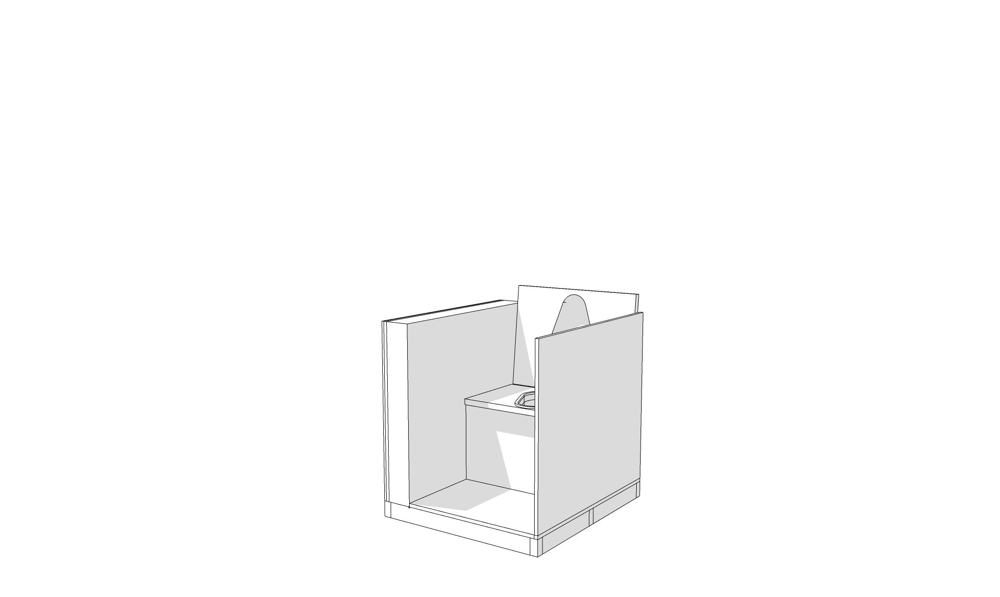
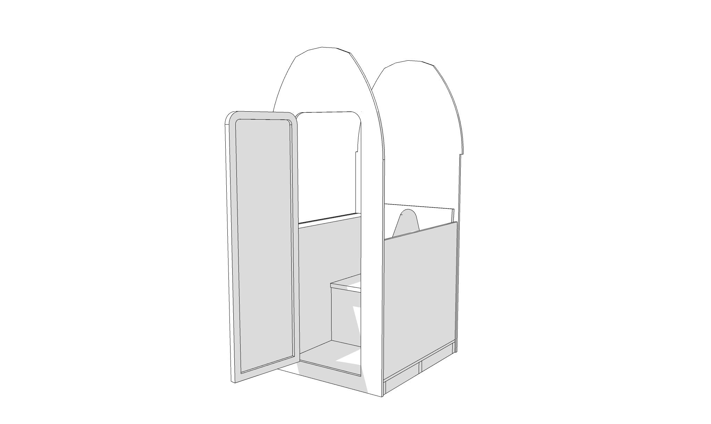
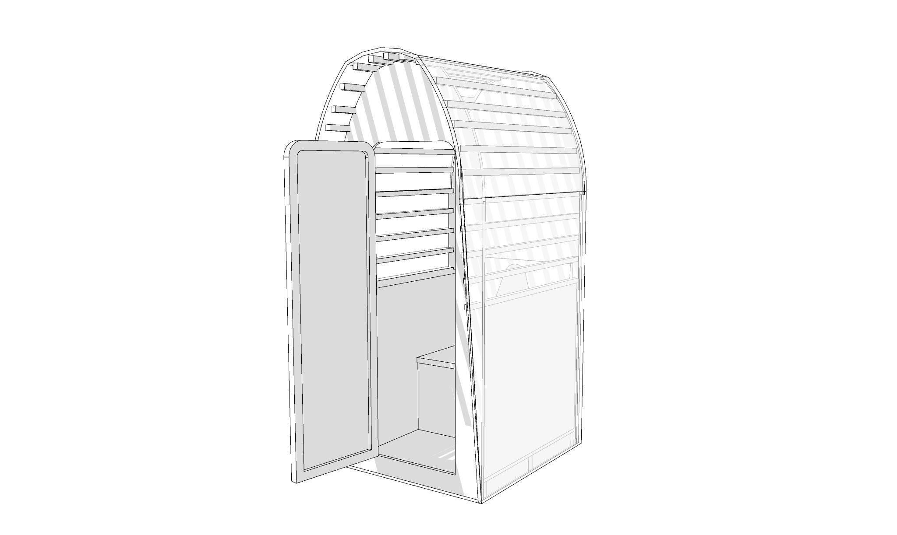
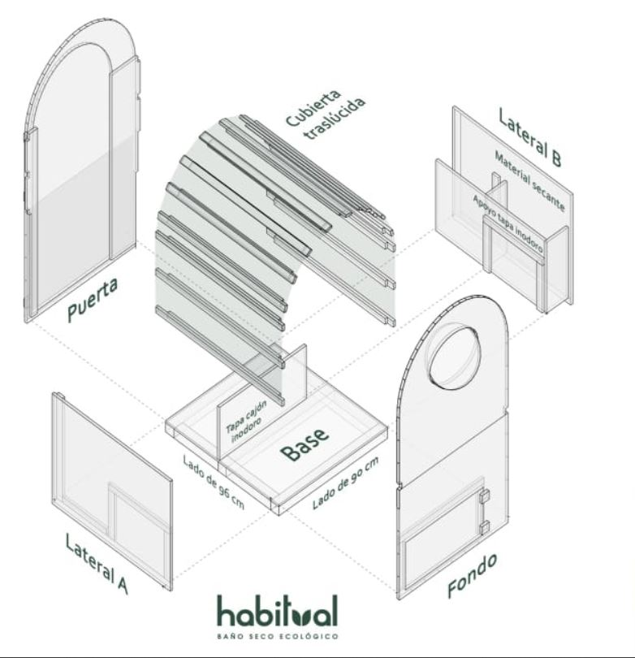
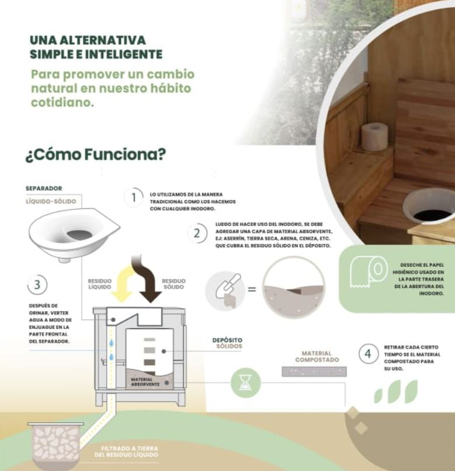
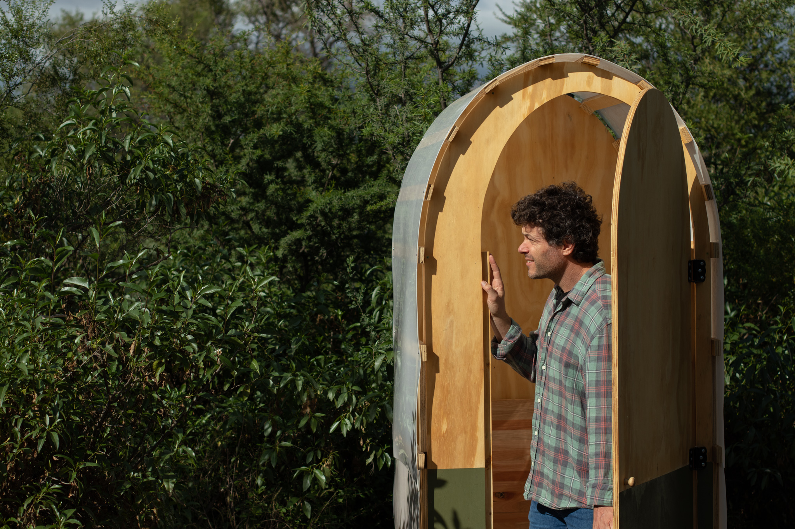

Traditional sanitation fails when infrastructure does. The Mini Module works precisely when and where it is needed most.
Flat-packed and assembles in under 30 minutes. No tools, no machinery, no infrastructure required.
Zero plumbing. Zero electricity. Operates in remote areas, disaster zones and anywhere water is scarce.
Urine-diverting design eliminates odour. Absorbent materials keep the unit clean between uses.
Waste converts to compost over time. No leachate, no blackwater, no environmental contamination.
Three steps. No training required.
Ships flat. One person assembles it in under 30 minutes — no tools needed.
The separator keeps solids and liquids apart, eliminating odour without chemicals or flushing.
Solid waste becomes compost. Liquid waste can be diluted and used as fertilizer.








Habitual began in Argentina in 2021. By 2024, more than ten units had been sold and remain in active use — built from real-world feedback and hands-on experimentation.
Now based in Switzerland, Habitual is bringing this proven solution to European humanitarian organizations and NGOs operating globally.
Read Our Story
We work with NGOs, humanitarian organizations and governments to design and deliver sanitation pilots in the field.
Start a Conversation